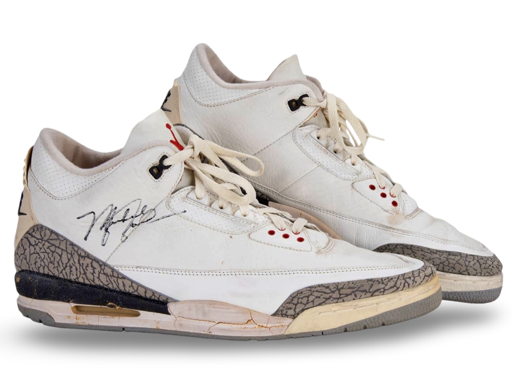
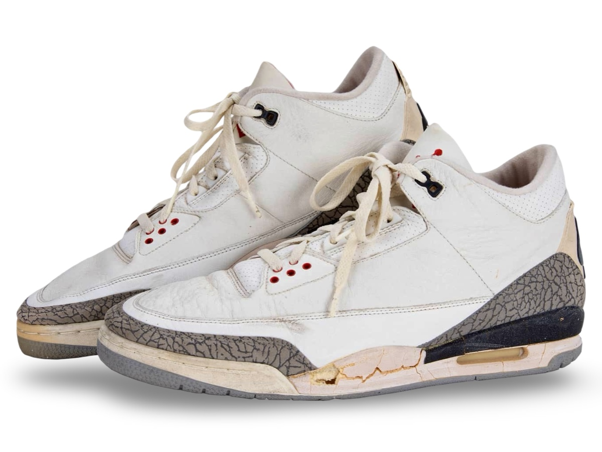
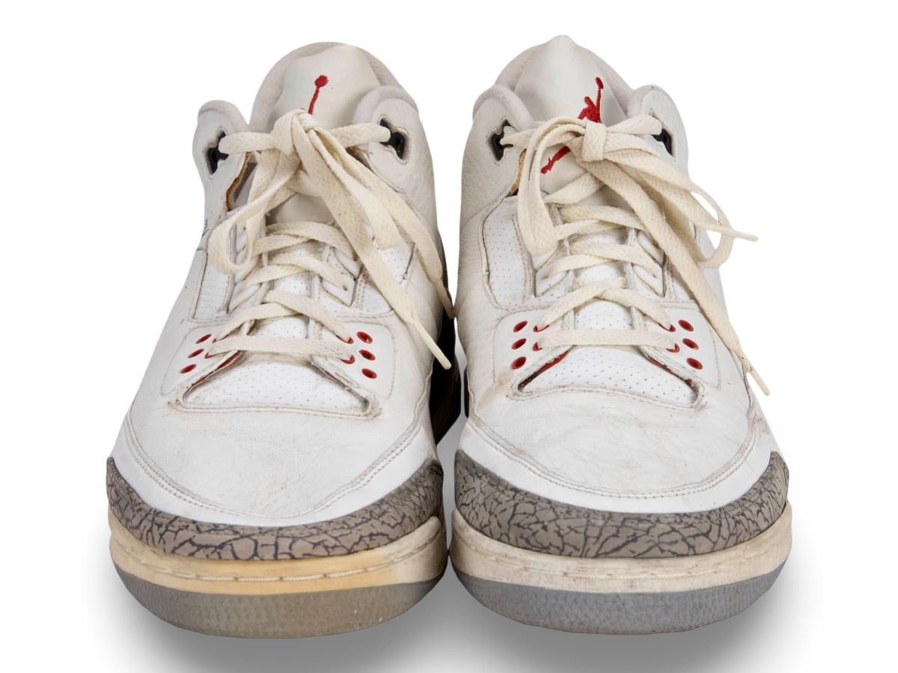
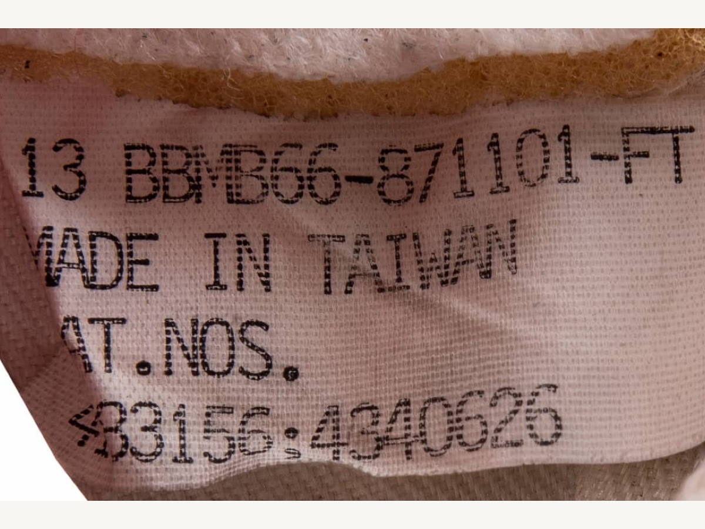

Air Jordan III sample, attributed to early season wear.
A sample variation with higher elephant print and slightly
higher ankle height, likely worn within the first few weeks of
the season.
Public Sale
- Auction House: Goldin Auctions
- Sale Date: February 22, 2020
- Lot #: 105
- Sale Price: $31,200
Photo Match Details
- Photo-Matched: No
- Games Photo-Matched: 0
- Photo-Matched By:
Research & Provenance
- Internal images and videos can confirm shape and wear patterns are consistent with game wear.